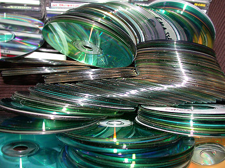

Decadent met data
zondag 8 februari 2004 | Gedachten
Ik heb deze avond grote kuis gehouden in mijn cd-rom collectie. Die was sinds de komst van mijn eerste cd-schrijver in 1995 exponentieel blijven aangroeien. Wat die acht jaar cd’s bakken aan data-afval oplevert ziet u op het fotootje onderaan…
Ik herinner me van mijn jaren in het college dat een klasgenoot opschepte over een cd-schrijver die zijn vader gekocht had voor 200.000fr. Een primeur! Allen — enfin, toch wij nerds — waren stikjaloers en droomden ervan ooit zelf cd-roms en zelfgecompileerde muziek-cd’s te kunnen branden. Enkele jaren later was het zover: cd-schrijvers (1x en 2x speed) waren gedaald in prijs tot een stevige, doch niet onoverkomelijke, 15.000fr.
Ongeveer op hetzelfde moment barstte de mp3-rage los. Samen met de opgang van goedkope schrijvers zorgde dat voor een ongeziene verzamelwoede onder computergebruikers: duizenden cd’s, maar ook programma’s als Office waren uitwisselbaar als nooit tevoren (nog niet zo heel lang geleden moest je een hele avond diskettes schrijven over hebben om Office te kopiëren).
Maar eens te meer geldt een oude regel: “Meer is minder”. Al heb ik zelf een vrij uitgebreide mp3-collectie, toch luister ik sinds 1995 niet opvallend vaker naar muziek. Integendeel: vroeger kocht je per jaar vijf cd’s in de winkel, en die koesterde je — met hoesje en al. Je beluisterde en bekeek ze wel 1000 keer tot ze een deel werden van jezelf. Vandaag haal je 1000 nummers of cd’s af van het net, speelt ze met wat geluk vijf keer af in je mp3-speler en zet ze op cd om dan nooit meer uit de kast te halen.
Daarom zal ik altijd cd’s blijven kopen, maar dan enkel cd’s die ik écht goed vind. In die zin levert de hele illegale mp3-handel mij — en de muziekindustrie — toch iets op: het internet is de grootste en meest diverse voorbeluisterpost ter wereld!

stefan op 9 februari 2004
Ik ben nooit gestopt met muziek kopen. Ik koop ongeveer evenveel muziek als ik vroeger deed; met het enige verschil dat ik de cd’s nog zelden uit de crystal case haal:
- fnaczak openen
- plastick eraf prutsen (en in het geval van de fnac is het prutsen)
- cd openen
- rippen naar mp3 (ondertussen het boekje eens bekijken)
- in de kast leggen
- naar mp3s luisteren (iPod on the move en iTunes @ home)
…